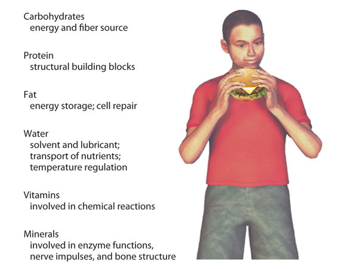
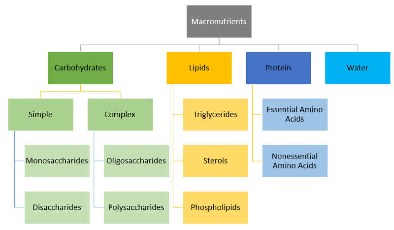
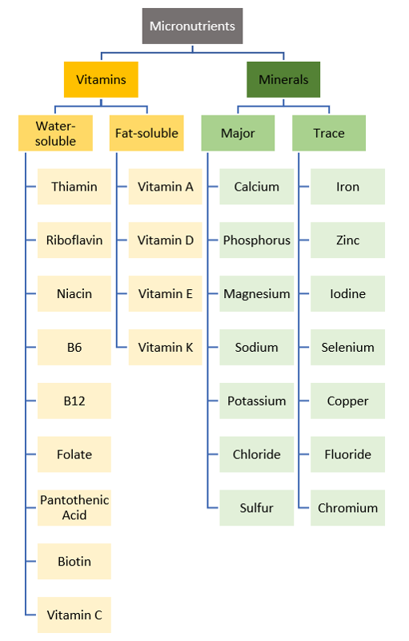

Unit Learning Objectives:
- 2.1 Identify the six classes of nutrients
- 2.2 Classify nutrients as essential and nonessential
- 2.3 Differentiate between macro and micronutrients
- 2.6 Identify main functions and sources of phytochemicals
The foods we eat contain nutrients. Nutrients are substances required by the body to perform its essential functions. Nutrients must be obtained from our diet since the human body does not produce enough of them. Nutrients have one or more of three primary functions: they provide energy, contribute to body structure, and/or regulate chemical processes in the body. These basic functions allow us to detect and respond to environmental surroundings, move, excrete wastes, respire (breathe), grow, and reproduce.

The study of nutrition goes beyond just discussing food and the nutrients the body needs. It includes how those nutrients are digested, absorbed, and used by the body's cells. It examines how food provides energy for daily activities and how our food intake and choices impact body weight and risk for chronic diseases such as heart disease and type 2 diabetes. It also provides insight into behavioral, social, and environmental factors influencing what, how, when, and why we eat. Thus, nutrition is an important part of the overall health and wellness discussion.
Nutrients are chemical substances found in food that are required by the body to provide energy, give the body structure, and help regulate chemical processes. There are six classes of nutrients:
- carbohydrates
- lipids
- proteins
- water
- vitamins
- minerals
Nutrients can be further classified as either macronutrients or micronutrients and whether or not they provide energy to the body (energy-yielding). We'll discuss these different ways of categorizing nutrients in the following sections.
Macronutrients
Nutrients that are needed in large amounts are called macronutrients. There are four classes of macronutrients: carbohydrates, lipids, proteins, and water. Three of them (carbohydrates, lipids, and protein) provide energy to cells in the body. Water is also a macronutrient because you require a large amount, but unlike the other macronutrients, it does not yield energy.

Carbohydrates, lipids, and protein provide energy to the body. In the macronutrients, only water does not supply energy.
Micronutrients
Micronutrients are nutrients the body requires in smaller amounts, but they're still essential for carrying out bodily functions. Micronutrients include all of the essential minerals and vitamins. In contrast to carbohydrates, lipids, and proteins, micronutrients are not a source of energy, but they assist in the process of energy metabolism as cofactors or components of enzymes (known as coenzymes). Enzymes are proteins that catalyze (or accelerate) chemical reactions in the body; they're involved in all body functions, including producing energy, digesting nutrients, and building macromolecules.

None of the micronutrients provide energy.
Phytochemicals
In addition to the essential nutrients, food also contains active compounds that benefit the body. Phytochemicals are biologically active compounds found in plants. Scientists have only scratched the surface of discovering all of the phytochemicals. Of the ones they identified, they seem to have beneficial roles in preventing multiple chronic conditions such as heart disease and cancer. They also reduce inflammation, help to heal, and prevent infections. Some of the most common phytochemicals are carotenoids, flavonoids, lignans, phenolic acids, and anthocyanidins. They are primarily found in fruits, vegetables, legumes, grains, cocoa, and coffee beans. Produce that is dark or bright in color typically contains more phytochemicals. While they are not considered essential nutrients, they are beneficial to the body and should be included as part of a healthy diet.
The body is dependent on nutrients, and we must get all of them in our diet through a varied choice of foods. As we go throughout the term, you will learn the importance of each nutrient. When you don't consume enough of each nutrient, body functions become impaired, and health can be jeopardized.